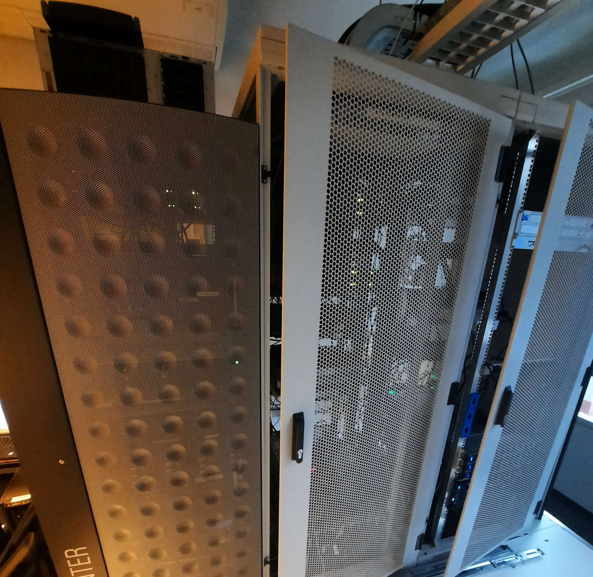

Dag 4: donderdag
Tof
Net zoals gisteren begon onze dag weer om half negen en mochten we het eerste half uur aan onze website werken. Hierna mochten we dockingstations installeren bij de technische dienst van Halle. Hier kregen we dan ook een kleine rondleiding over wat er allemaal in dit gebouw gebeurt. Na de rondleiding vertrokken we naar de bibliotheek van Halle, waar we een oude computer mochten vervangen door een nieuwere. Toen we terug bij de gemeente van Zoersel waren, kregen we uitleg over het virtualiseren van servers, bijvoorbeeld met welke programma's dit allemaal kan en de voordelen hiervan. Vervolgens kregen we nog uitleg over containers en daarna mochten we weer ongeveer een half uur werken aan onze website of andere taken voor de observatiestage. Daarna konden we kijken naar hoe onderdelen van een laptop vervangen worden. Ten slotte konden we nog een vergadering volgen over Digidak. Digidak is een laagdrempelige leeromgeving voor mensen die nog weinig of geen kennis hebben van computers. Na deze vergadering zat onze voorlaatste dag van de observatiestage bij de gemeente Zoersel erop.
